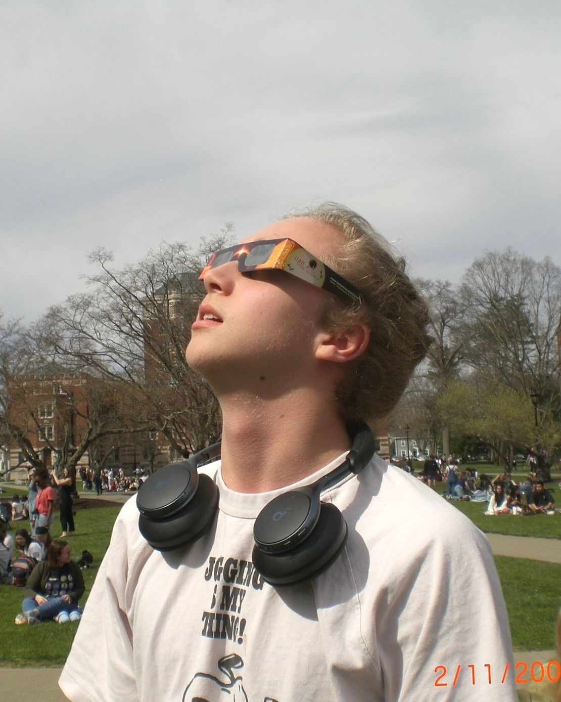

Vassar College · Class of 2027
Astronomy & Physics · Applied Mathematics
✦ Click an object to see/hear its spectrum
About

I'm Theo Olsen, a senior at Vassar College studying astronomy, physics, and applied math. I'm currently doing research with the BDNYC group at the American Museum of Natural History. I'm especially drawn to researching protoplanetary disks and brown dwarfs, and I love using observational data to learn how planets and substellar objects form and evolve. Science communication is a big passion of mine. I love to host observatory open nights, run journal clubs, and do anything I can to make astronomy a little more fun and accessible (like building games!).
When I'm not doing research, I'm usually fishing or eating my way through a new neighborhood, walking around the city with my partner, or listening to some Mahler (real ones know). I also have two beautiful cats named Celeste and Scherzo that take up lots of my attention.